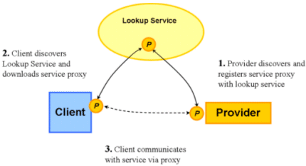

LUS is based on Jini. Jini is a network architecture for the construction of distributed systems where scale, rate of change and complexity of interactions within and between networks are extremely important and cannot be satisfactorily addressed by existing technologies. Jini technology provides a flexible infrastructure for delivering services in a network, and for creating spontaneous interactions between clients that use these services regardless of their hardware or software implementations.
Traditional network architecture is static in nature. Network designers know in advance which computer hardware and software will participate in a specific customer solution, and the network infrastructure is built in accordance with this concept. For example, in the Client/Server network architecture, specific server resources are designated to be served to clients on request, while other software units are indigenous on the clients. Dynamic network architecture recognizes that to achieve the best customer solution, it is better not to decide in advance the specific hardware and software that will participate in the solution. Because of the multiplicity of software and hardware available on the network that could participate in the solution, it is advantageous to defer the decision until the software or hardware is actually required. The idea is to have the solution itself seek on the network the components and resources it requires, choosing them on the basis of availability, performance and quality. Should the selected components and resources degrade or fail during execution, the solution can replace them while continuing to operate, increasing the reliability of the solution.
It is difficult to draw a network connection diagram for such a solution, because it changes constantly during the solution's execution as the system connects, disconnects and reconnects to various network hardware and software – hence dynamic network architecture.
Service-oriented architecture (SOA) is the dynamic network architecture discussed above as applied to software components. An executing solution seeks on the network the software services it requires, choosing them on the basis of availability, performance and quality.
SOA takes the existing software components residing on the network and allows them to be published, invoked and discovered by each other. SOA allows a software programmer to model programming problems in terms of services offered by components to anyone, anywhere over the network.
In order to support the operation of a dynamic network architecture or an SOA, a new concept of networking and supporting infrastructure is required. The traditional concept of a network administrator residing on a specific computer and performing the majority of maintenance functions is not viable in an architecture in which computers can be readily exchanged.
The major network functionality needs to be delegated among the network participants and performed in a lateral way instead of the traditional top-down way.
To address this requirement, Jini defines the concept of a dynamic federation of resources, services and users that are joined by the Jini technology infrastructure and served by Jini services. There can be many such federations defined on the network, each publishing its particular services. Once a client or a service has joined a particular federation it can use its Jini services. Each federation has a Jini Lookup Service, like a telephone directory, that contains information and references to services that have registered themselves on the federation so a client can locate and use the service he seeks. When a client starts working on a federation, he can use additional Jini services to perform template-based searches, lease resources, handle network events, and process transactions. Finally, Jini provides a discovery service that helps a client (or service) find the federation most appropriate for his requirements.
The Jini technology includes the following services:
For a detailed explanation of these services, refer to the Key Jini Services section below.
As the following block diagram shows, the Jini technology is made possible by the characteristics of the Java language, in particular:
The diagram above shows that the Jini services are layered on the Java language, which can itself be used on all major operating systems throughout a network. GigaSpaces provides also C++ and .NET applications to access deployed services. The polymorphic typing and portable code allows Java-based Jini to span the network and serve various disparate network elements. The JavaSpaces service could be considered a "super" Jini service.
For more details, refer to the JavaSpaces section below.
This section discusses the fundamental issue of how services connect and register with the network in a SOA.
The basic networks elements in the Jini architecture related to this issue are:
Lookup Service
Provider
Service Proxy
Client
To register a service, a provider needs to supply two items – a set of attributes that describe the service being registered and a service proxy.
The service proxy is more than just a link to the service – it itself is a Java interface that allows a client requestor to invoke the service remotely. As the following diagram shows, the service proxy is mobile code – a Java interface that works anywhere in the network.
As the diagram further indicates, the communication protocol required between client and provider is actually built into the interface code. Thus the client computer is relieved of handling the communication and it is possible for one client to communicate with multiple services, each with a different communications protocol.
The following diagram shows how a service provider registers a service with the Lookup Service, and how a client subsequently locates the service at the Lookup Service and begins working with the service.
The service proxy is copied by the provider to the Lookup Service at registration. If the client decides to use the service, he downloads the service proxy and invokes the service by calling the methods of its proxy interface.

This section discusses the key Jini services and their role in creating a dynamic service oriented architecture.
In a dynamic federation in which services can join and leave at any time, up-to-date lookup registry is necessary.
The Lookup Service is the primary means for client programs to find services in the federation, and is the foundation for providing user interfaces through which users and administrators can discover and interact with services in the federation. Descriptive service information stored in the Lookup Service helps clients decide whether to use the service or not.
The Lookup Service has the following interfaces:
The ServiceRegistrar interface provides methods to register service items, find items that match a template, receive event notifications when items are modified, and incrementally explore the collection of items along the three major axes: Entry class, attribute value, and service type.
The ServiceRegistration interface allows a registered service item to be manipulated and provides methods to return the service ID for the service, return the lease that controls the service registration, allow the lease to be renewed or cancelled, add specified attribute sets to the registered service item and delete all of the service item's existing attributes and replace them with the specified attribute sets.
Because of the multiplicity of federations on the network and their dynamic nature, a client requires assistance to find the Lookup Service of the appropriate federation.
Entities that wish to start participating in a federation, must first obtain references to one or more lookup services. Jini technology discovery allows acquisition of these references. Joining the network enable a service to publicly advertise itself with it's type and attributes allows to usefully work with services in a federation.
The discovery process involves three closely related protocols:
The discovery service has the following interfaces:
The LookupLocator class in the net.jini.core.discovery package is a simple mechanism for performing unicast discovery and provides methods to return the name of the host with which an object attempts to perform unicast discovery, to return the TCP port at that host to which the object connects, and to return an instance of the proxy for the specified Lookup Service.
The com.sun.jini.discovery package supports multicast discovery and provides a set of constraints, low-level utility classes, and provider interfaces for participating in versions 1 and 2 of the multicast request, multicast announcement, and unicast discovery protocols.
A dynamic federation requires simple but powerful search schemes and methods. The Entry interface makes it possible to use template-matching search schemes that are suited to network-wide searches.
An Entry is not a service used per service but rather an important interface used in several services. The Entry interface and its associated UnusableEntryException are used by the Lookup Service to represent service-specific attributes (see ServiceRegistration), and by the JavaSpaces interface to mark Entries. Entries are used in distributed algorithms for which exact template-match lookup semantics are useful.
There are three types of service operations that use Entries:
Match operations use Entry objects, whose fields can either have values or wildcards.
Fields with values must be matched exactly, whereas wildcards null values) match any value.
In distributed applications on a network, where there may be partial failures of the network or of components, there needs to be a way for components to be timed out if they have failed, or have become unreachable.
The leasing mechanism addresses the problem. It is used between applications to give access to resources over a period of time in an agreed manner. Leases are requested for a period of time.
The client call can request the length or duration of a lease in the following ways:
Lease interface constant FOREVER, requests a lease that never expires. When granted such a lease, the lease holder is responsible for ensuring that the leased resource is freed when no longer needed.Lease interface constant ANY, indicates that no particular lease time is desired and that the grantor of the lease should supply a time that is most convenient for the grantor.The leasing service has the main interface Lease, which provides methods to cancel the lease, to get the expiry time and to renew the lease:
The package com.sun.jini.lease contains some basic utility classes for helping with client-side lease renewal operations.
Transactions, Entries and notifications use the leasing mechanism.
For dynamic network environments, the notifications of events from remote objects may arrive in different orders on different clients, or may not arrive at all. Further, the object requiring the event notification may not want to have that notification as soon as possible, but only on a schedule determined by the recipient and may want the notification of the event to be sent to a third network party.
The Jini technology remote event model extends the local event model to dynamic network architectures. It allows an object in one network location to register interest in an event occurring in an object in another network location, and to designate a third network object to receive a notification when an event of that kind occurs.
For the three network entities:
Remote events operate as follows:
The distributed events service has the following interfaces:
The RemoteEventListener interface is implemented by any object that wants to receive a notification of a remote event from some other object. It provides a method to notify the listener when an event occurs. The event object is passed to the listener as a parameter in the method.
The EventRegistration class is a utility class for use as a return value for event-interest registration methods.
The RemoteEvent class represents the event, including ID, registration hand back object and sequence number.
The NotifyDelegator uses the above interfaces and classes.
When remote network members participate in a transaction it is important to enforce a consistent model of operations. Then, in case one member participant fails, the transaction can be reliably aborted, ensuring that no partial results are written. The Transaction Processing Service supports a two-phase commit model on a dynamic network.
A transaction is created and overseen by a manager. A client asks the manager to create a transaction object. The transaction object created is then passed as a parameter when performing operations on a service.
A transaction completes when any entity either commits or aborts the transaction. If a transaction commits successfully, then all operations performed under that transaction will complete. Aborting a transaction means that all operations performed under that transaction will appear never to have happened.
The Transaction service has the following interfaces:
The Transaction interface represents transactions returned by the TransactionManager for use with transaction participants that implement the default transaction semantics. It provides methods to abort and commit the transaction.
The TransactionFactory class contains methods to create transactions.
The TransactionManager interface is used for managers of the two-phase commit protocol for top-level transactions and contains methods to create, abort, and commit transactions, and to join a transaction that is managed by this transaction manager.
Building distributed applications with conventional network tools usually entails passing messages between processes or invoking methods on remote objects.
When using the JavaSpaces service, in contrast, processes don't communicate directly, but instead coordinate their activities by exchanging objects through a space, or shared memory.
The JavaSpaces Service offers a generic, high level abstraction of communication between processes for storing state, transmitting messages or synchronizing disparate entities.
The JavaSpace itself is a model of persisted data in a data source and abstracts the actual data sources; it is normally realized in memory. The members of a JavaSpace are called Entries and they must be objects of the Jini Entry class described in the Jini Entry service. Here the term "Entry" is the abstraction of an Entry in an actual database.
A process can write new objects into a space, take objects from a space, or read (make a copy of) objects in a space; the diagram below depicts several processes (represented by Dukes) interacting with spaces using these operations. When taking or reading objects, processes use simple matching, based on the values of fields, to find the objects that matter to them. If a matching object isn't found immediately, then a process can wait until one arrives. In JavaSpaces, unlike conventional object stores, processes don't modify objects in the space or invoke their methods directly - while there, objects are just passive data. To modify an object, a process must explicitly remove it, update it, and reinsert it into the space.
Some examples of the built-in Jini services in a JavaSpace:
Using template-based searches to look up Entries in a JavaSpaces.
Performing multiple, template-based read or take operations.
Using the distributed events service to request notification when an Entry that matches a specified template is written.
Using the transaction processing service, the JavaSpaces read and write functions can be transaction-based.
Using the distributed leasing service, Entries written into a JavaSpace are governed by a lease.